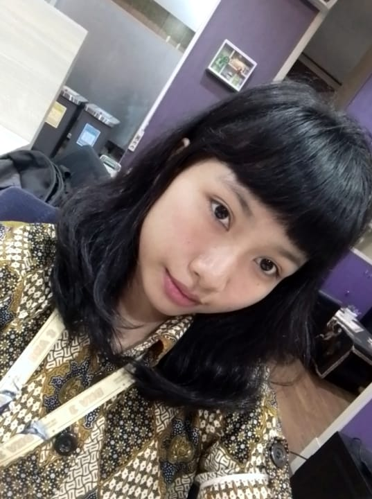

Manual Drawing
Monster Character
Eksplorasi gambar manual karakter monster dengan fokus pada bentuk, detail, tekstur, dan proporsi untuk menciptakan karakter yang berciri khas dan ekspresif.
Portofolio kreatif Nur Alvin, siswa Desain Komunikasi Visual. Kumpulan karya dan eksplorasi visual dari berbagai tugas desain, ilustrasi, fotografi, branding, dan proyek kreatif lainnya.

A curated collection of dreamy moments, tactile experiments, and romantic visual narratives.
Eksplorasi gambar manual karakter monster dengan fokus pada bentuk, detail, tekstur, dan proporsi untuk menciptakan karakter yang berciri khas dan ekspresif.
Eksplorasi stilasi bentuk makanan menjadi visual sederhana dan dekoratif yang tetap mudah dikenali dengan komposisi menarik.
Eksplorasi garis lengkung melalui pengulangan, variasi arah, dan kepadatan untuk membentuk objek serta kesan ritmis, dinamis, dan harmonis.
Eksplorasi titik sebagai elemen dasar komposisi visual melalui variasi ukuran, kepadatan, dan susunan untuk kesan gradasi dan ruang.
Eksplorasi elemen garis melalui pengulangan dan variasi bentuk untuk kesan ritmis dan dinamis, membentuk objek secara visual.
Eksplorasi stilasi bentuk burung menjadi komposisi dekoratif melalui penyederhanaan bentuk, pola, dan warna.
Eksplorasi teknik arsir untuk menggambar objek realistis melalui gelap terang, tekstur, bayangan, dan volume.
Eksplorasi lanjutan teknik arsir dengan variasi arah dan kepadatan garis untuk membentuk volume serta tekstur yang lebih hidup.
Eksplorasi lanjutan teknik arsir dengan fokus pada gelap terang, bayangan, dan detail objek untuk kesan realistis.
Eksplorasi lukisan dengan komposisi warna dan sapuan kuas yang menarik untuk menyampaikan suasana dan kesan visual.
Eksplorasi lukisan dengan pencampuran warna dan variasi tekstur untuk menciptakan karya yang ekspresif dan dinamis.
Eksplorasi lukisan dengan keseimbangan komposisi dan gradasi warna untuk kesan visual yang harmonis dan mendalam.
Perancangan logo sebagai identitas visual yang kuat, sederhana, dan mudah dikenali.
Perancangan logo dengan identitas visual yang kuat, sederhana, dan mudah dikenali.
Perancangan logo dengan konsep yang lebih variatif dan tetap mempertahankan kesan yang mudah dikenali.
Eksplorasi identitas visual dengan kombinasi tipografi dan simbol yang selaras dan berkesan.
Perancangan desain kaos dengan tipografi dan ilustrasi yang menarik.
Perancangan antarmuka digital dengan fokus pada kemudahan pengguna.
Eksplorasi desain tiga dimensi dengan pencahayaan dan tekstur.
Eksplorasi desain tiga dimensi karakter chibi dengan bentuk proporsional, pencahayaan, dan tekstur yang menarik.
Eksplorasi desain dua dimensi dengan komposisi, warna, dan ilustrasi yang menarik.
Eksplorasi proses pembuatan ilustrasi dua dimensi dengan komposisi, warna, dan detail yang menarik.
Perancangan kemasan produk yang menarik, informatif, dan memperkuat identitas merek.
Perancangan maskot sebagai identitas visual yang ramah, unik, dan mudah diingat untuk memperkuat citra sebuah brand.
Klik untuk membuka dan membaca Graphic Standard Manual (GSM) secara langsung.
Penyajian desain dalam bentuk mockup yang realistis untuk memperlihatkan hasil karya dalam konteks penggunaan nyata.
Penyajian desain dalam bentuk mockup yang realistis untuk memperlihatkan hasil karya dalam konteks penggunaan nyata.
Klik untuk membuka dan membaca modul 1 secara langsung.
Klik untuk membuka dan membaca modul 2 secara langsung.
Klik untuk membuka dan membaca modul 3 secara langsung.
Klik untuk membuka dan membaca modul 4 secara langsung.


Saya merupakan siswi SMK jurusan Desain Komunikasi Visual (DKV) yang memiliki ketertarikan dalam bidang desain dan seni visual. Portofolio ini menjadi wadah untuk menampilkan berbagai karya yang telah saya buat selama proses belajar di bidang DKV. Melalui setiap karya, saya terus mengembangkan kemampuan dalam mengolah ide, mengaplikasikan prinsip desain, serta menyampaikan pesan melalui visual. Portofolio ini juga menjadi bagian dari perjalanan dan perkembangan saya dalam mengenal serta mengeksplorasi dunia desain.
Get in Touch
Whether you're looking to collaborate on a new project, inquire about a commission, or simply share a passing thought, my inbox is always open. Let's create something beautiful together.
Find me elsewhere
Studio Address
12 Rue des Rêves
75003 Paris, France
Desain Komunikasi Visual
I promise to write back.